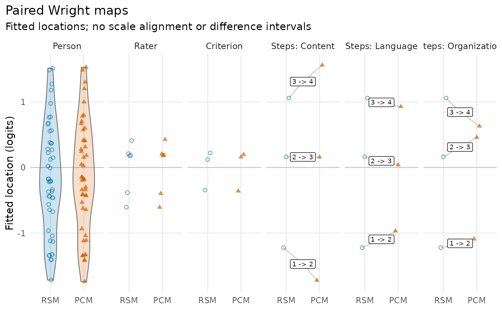
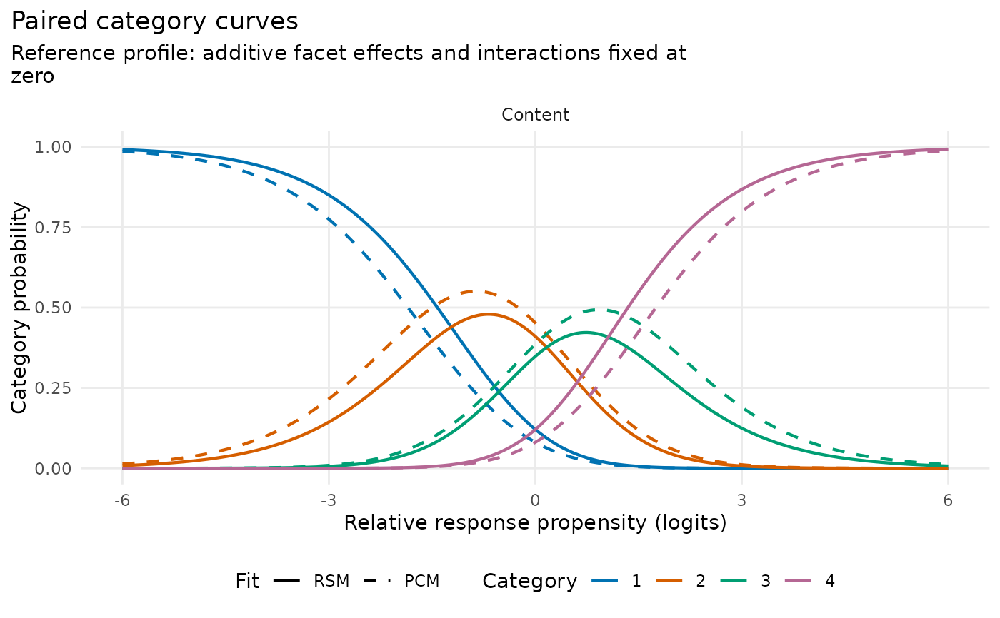

Compare Wright maps or category curves from two fitted models
Source:R/api-plotting-comparison.R
plot_compare_mfrm.RdCompare Wright maps or category curves from two fitted models
Usage
plot_compare_mfrm(
reference,
comparison,
type = c("wright", "ccc"),
view = c("comparison", "difference"),
labels = c("Reference", "Comparison"),
curve_groups = NULL,
panel = c("auto", "category", "group"),
theta_range = c(-6, 6),
theta_points = 241L,
preset = c("standard", "publication", "compact", "monochrome"),
show_title = TRUE,
show_notes = TRUE,
draw = TRUE
)Arguments
- reference, comparison
Two
mfrm_fitobjects. All signed differences are comparison minus reference, on the fitted coordinate scale.- type
"wright"for distributions/locations or"ccc"for category probabilities at the zero additive-facet reference profile.- view
"comparison"for paired displays or"difference"for matched location differences versus means, or probability differences.- labels
Two distinct, nonempty display labels, reference first.
- curve_groups
Optional step-facet levels to compare. By default all groups are required in both fits. An RSM common scale is explicitly paired with each selected PCM/GPCM group. Non-RSM fits must share a step owner.
- panel
CCC layout:
"auto"uses category panels in monochrome or with more than five categories, otherwise"group"."category"always separates categories;"group"overlays categories within each group.- theta_range
Finite increasing length-two predictor range for CCCs.
- theta_points
Integer number of grid points, at least two.
- preset
Existing visual preset; monochrome uses shapes/line types as well as grey tones.
- show_title, show_notes
Display title and explanatory subtitle. Notes and source readiness remain in the returned object.
- draw
Draw with the optional ggplot2 renderer.
FALSEreturns data without requiring ggplot2. Useas_ggplot()to customize/export a view.
Value
An mfrm_plot_data object. data$locations and data$differences
describe Wright coordinates and matches; data$probabilities,
data$differences and data$summary describe CCCs. Both types return
group_selection, category_labels, basis, scale_contracts,
fit_readiness, notes and display settings. source_plots preserves
the native draw-free payloads and their exclusions/interpretation metadata.
Details
This is a descriptive paired-model display, not an information-criterion comparison or an external-software importer. Recorded centering, anchors, orientation, category coding, estimator method and coordinate basis must agree. These checks do not establish scale equivalence: no origin or unit transformation is estimated, and no observations or model parameters are refitted. Population SDs, full scale contracts and compared settings are returned for inspection. Different data/assignments can affect differences.
Wright maps use all source levels, with persons displayed as violins only when at least two distinct eligible estimates exist; otherwise points are used. Facet and step points are offset horizontally only. Step panels pair corresponding adjacent transitions; RSM steps are repeated as references across selected PCM/GPCM groups, not estimated separately. Excluded, non-finite, boundary-separated and unmatched levels remain in the tables. Differences are unavailable for those rows, never set to zero. No SE or CI for a difference is calculated. Person distributions are distributions of fitted point estimates, not posterior or population density estimates.
CCCs reuse plot.mfrm_fit() probabilities, retaining GPCM slopes. Additive
facet effects and interactions are fixed at zero in both fits. Equal
original category mappings and a common predictor grid are required.
The maximum absolute probability difference is a grid diagnostic, with
its signed value, category and grid location from the first maximizing row returned;
it is not a continuous-domain supremum or a significance test. Use explicit
group selection or a larger export when many panels are needed.
Category retains the native internal code; OriginalCategory records the
score label shown in the plot. ExpectedScoreDifference uses the native
internal score coding, which need not equal the original score increments.
Session plot defaults
Set options(mfrmr.plot_preset = "publication") to choose a session default
for plotting functions that expose the common preset argument. The
supported values are "standard", "publication", "compact" and
"monochrome". Precedence is an explicit call argument, then the session
option, then "standard". For example, preset = "standard" overrides
a session set to "monochrome". Explicit preset = NULL retains the
earlier package-default behavior; it does not read the session option.
Invalid session values cause an error only when that option is needed.
The category-curve, data-quality, fit-review, connectivity and network
routes of plot() for report bundles use the same option through ....
Plots without a common preset argument, including extended-model plots
with their own palette controls, keep their own settings. This option
selects a preset, not a universal theme or a guarantee that all renderers
implement every appearance control identically.
New plot payloads retain the resolved preset for supported saved-data
rendering. Converting an existing payload with as_ggplot() uses its saved
appearance, even after the session option changes. A call that creates a
new plot from a fit or statistical result uses the current default.
For a reproducible script, supply preset explicitly or set the option in
that script. Saving only the fitted model does not save a session option.
No global ggplot theme is changed.
Restore previous settings with old <- options(mfrmr.plot_preset = "monochrome") followed by options(old). Use
options(mfrmr.plot_preset = NULL) to remove the option. The preset changes
appearance, not estimates, confidence levels or diagnostic thresholds.
Examples
# \donttest{
# Load one dataset for both models
library(mfrmr)
toy <- load_mfrmr_data("example_operational")
# RSM: shared category thresholds
fit_rsm <- fit_mfrm(
data = toy,
person = "Person",
facets = c("Rater", "Criterion"),
score = "Score",
method = "MML",
model = "RSM"
)
# PCM: separate category thresholds for each criterion
fit_pcm <- fit_mfrm(
data = toy,
person = "Person",
facets = c("Rater", "Criterion"),
score = "Score",
method = "MML",
model = "PCM",
step_facet = "Criterion"
)
# Compare fitted locations; drawing requires the optional ggplot2 package
# If needed, install it once with install.packages("ggplot2")
if (requireNamespace("ggplot2", quietly = TRUE)) {
plot_compare_mfrm(fit_rsm, fit_pcm, labels = c("RSM", "PCM"))
# Run separately: compare score-category probabilities for one criterion
plot_compare_mfrm(
fit_rsm, fit_pcm,
type = "ccc",
curve_groups = "Content",
labels = c("RSM", "PCM")
)
}


# Plot data are available even without ggplot2
paired <- plot_compare_mfrm(fit_rsm, fit_pcm, draw = FALSE)
head(paired$data$differences)
#> Kind Facet Level Estimate_Reference SourceEstimate_Reference
#> 1 Person Person P001 0.28429588 0.28429588
#> 2 Person Person P002 0.66118004 0.66118004
#> 3 Person Person P003 0.02177773 0.02177773
#> 4 Person Person P004 0.22410785 0.22410785
#> 5 Person Person P005 -0.17496065 -0.17496065
#> 6 Person Person P006 0.67681003 0.67681003
#> Status_Reference Estimate_Comparison SourceEstimate_Comparison
#> 1 available 0.27759201 0.27759201
#> 2 available 0.66997152 0.66997152
#> 3 available 0.04626811 0.04626811
#> 4 available 0.24404608 0.24404608
#> 5 available -0.14689383 -0.14689383
#> 6 available 0.70466790 0.70466790
#> Status_Comparison Difference Mean
#> 1 available -0.006703866 0.28094394
#> 2 available 0.008791479 0.66557578
#> 3 available 0.024490385 0.03402292
#> 4 available 0.019938230 0.23407696
#> 5 available 0.028066825 -0.16092724
#> 6 available 0.027857869 0.69073897
# Differences are PCM minus RSM; no difference SE or significance test is computed
# }